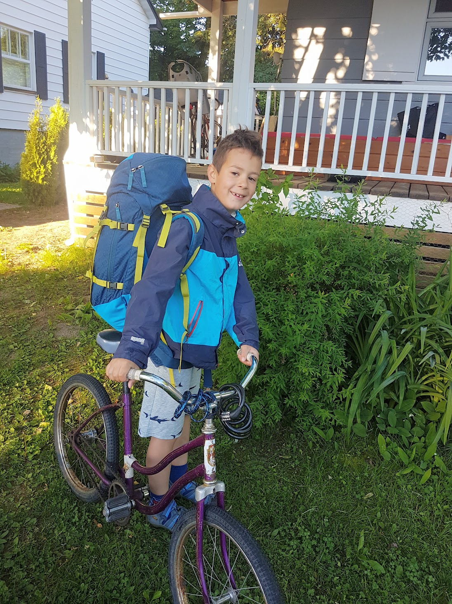
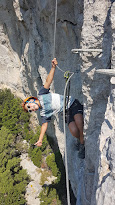

dans mon site vous allez en appendre plus sur mes passions
Depuis que je suis tout petit j'aime beaucoup le camping,le sentitment d'etre dans la nature et de profiter de la foret
depuis mes 7 ans je suis dans les scouts et nous faisons pleins d'aventures avec le plain air
mon projet est de marcher l'appalachian trail qui est un sentier de 3500km de long au travers les etats-unis
voici plus d'explication sur mon projet appalachian-trail
un lien vers scout canada Link 1
| Explication | Photo |
|---|---|
| Sur cette photo, j'étais entrain de sortir d'une tente en bretagne | |
| Sur cette photo, j'étais entrain de finaliser une marche de 45km a tadousak | |
j'ai toujours aime faire du velo, et j'ai déja participé a un club de velo de route, j'ai un autre projet de faire une partie de l'europe en cyclotourisme
j'aime aussi l'escalade car c'est un sport qui repousse mes limites
on peut faire de l'escalade à l'exterieur ou à l'interieur dans les gyms
un site sur le cyclotourisme cyclotourisme
explication sur l'escalade traditionelle escalade
| Explication | Photo |
|---|---|
| Sur la photo, j'allais à un camp scout en vélo |  |
| Sur la photo, je faisais de la via ferrata en France |  |